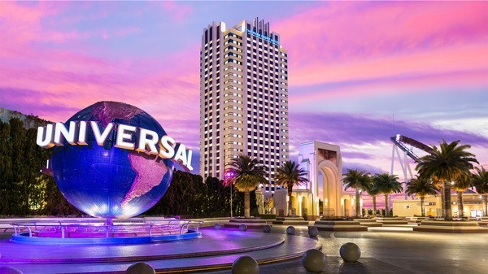
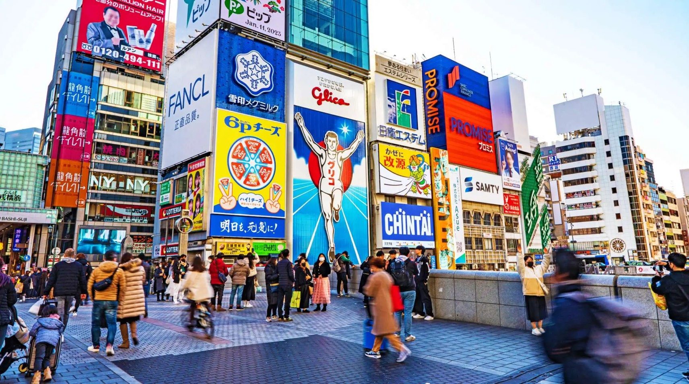
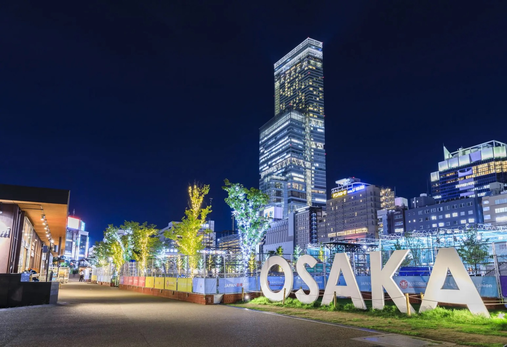
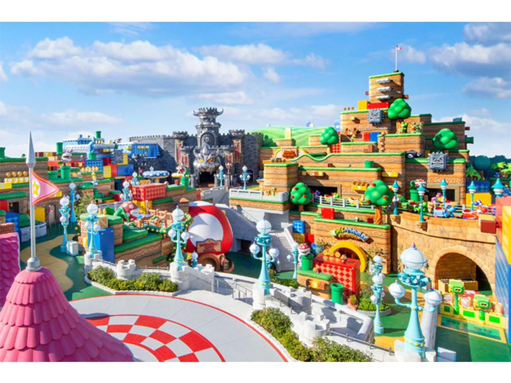
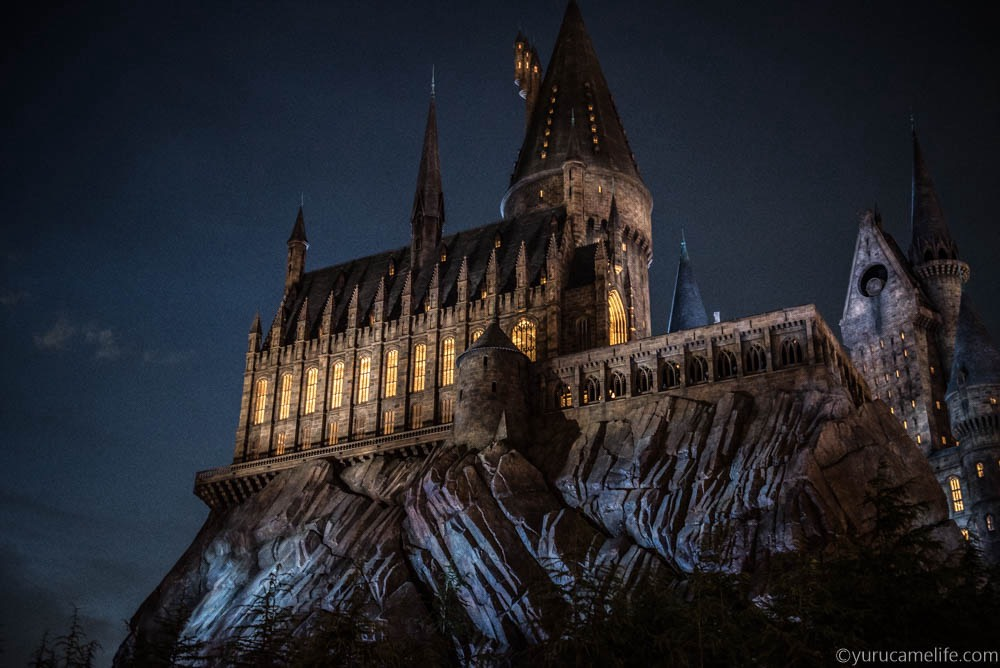
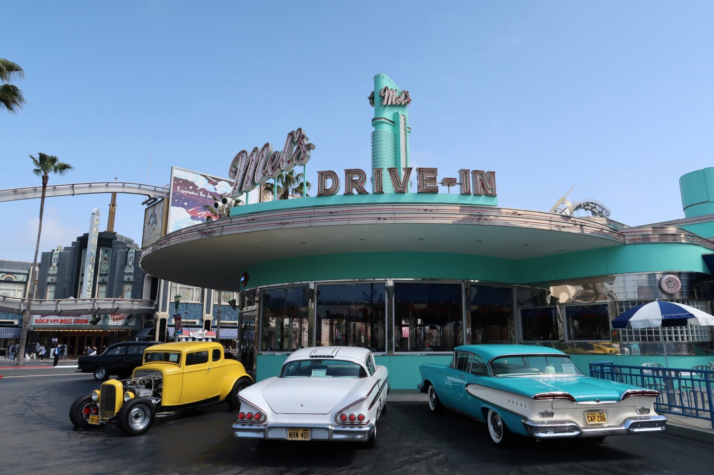

高松駅 出発
【JR】快速マリンライナー6号 (岡山行) に乗車
〜確定ルート・移動ゆとり20分確保プラン〜
【JR】快速マリンライナー6号 (岡山行) に乗車
新幹線乗り換え口へゆったり移動できます。
【新幹線】のぞみ78号 (東京行) に乗車
新幹線からJR在来線の乗り換えホームへ移動します。
【JR】京都線 (普通または快速・大阪方面行) に乗車
【確定】大阪駅に到着！
【JR在来線】でホテルへ直行します。
【確定ホテル】チェックイン前に荷物を預ける
これでここからは完全身軽で観光できます。

【JR・阪神線】西九条乗り換えでミナミ(難波)へ移動
【確定】道頓堀でランチ & 散策
お好み焼きや串カツ、たこ焼きなどを堪能。グリコ前で記念撮影！

【地下鉄御堂筋線】で移動 (乗車時間: 約6分)
日本屈指の高層ビル。展望台からの絶景やショッピングを楽しみます。

【地下鉄御堂筋線】でキタ(梅田)へ移動 (乗車時間: 約15分)
グランフロント大阪やルクアでショッピング & 少し早めのディナー。
【JR在来線】でホテルへ帰還します。
ホテルに正式チェックイン。翌日のUSJに備えて早めに就寝！
パークのメインゲートへ (徒歩1分！)
※公式開園時間より早く開くことが多いため早めの整列が鉄則です。
朝から晩まで全力で満喫！
人気アトラクション、エリア、パレード、夜のショーまで遊び尽くします。



閉園後、ホテルで預けた荷物を素早くピックアップして駅へ向かいます。
【JR】ゆめ咲線・環状線 (大阪方面行) に乗車
大阪駅から新大阪行きのホームへ移動します。
【JR】京都線 (新大阪方面行) に乗車
新幹線の最終便に向け、駅弁や飲み物、お土産を買うゆとりがあります。
【新幹線】のぞみ91号 (岡山行) に乗車
※岡山へ向かう新幹線の最終便です！
新幹線ホームから、四国方面のマリンライナーホームへ移動します。
【JR】快速マリンライナー75号 (高松行) に乗車
※高松へ帰れる最終列車です！
高松駅に到着！お疲れ様でした！